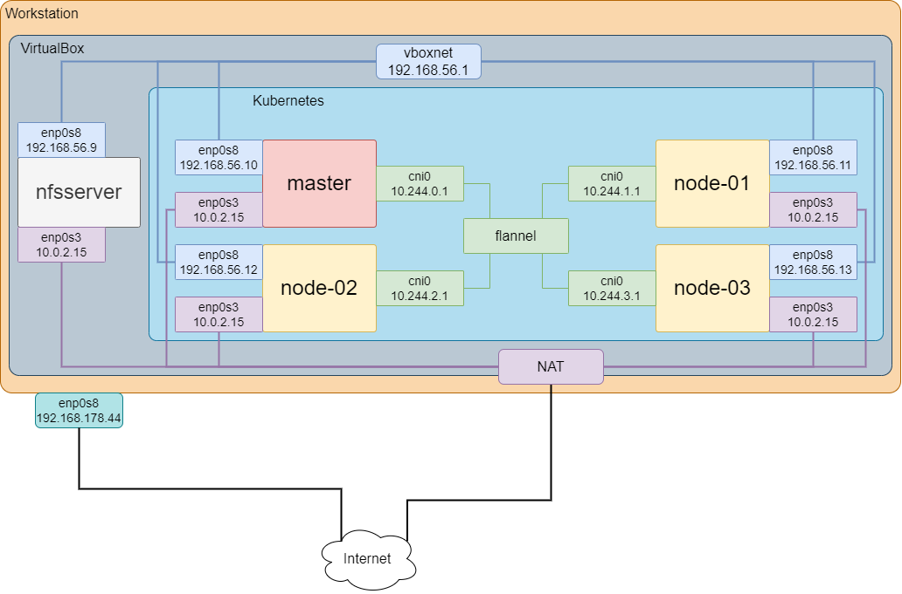

Quellen
Netzwerk

Skripte
Vagrantfile
# Set IP Adresses of Master and Worker nodes
ADMIN_IP = "192.168.56.8"
NFSSERVER_IP = "192.168.56.9"
MASTER_IP = "192.168.56.10"
NODE_01_IP = "192.168.56.11"
NODE_02_IP = "192.168.56.12"
NODE_03_IP = "192.168.56.13"
Vagrant.configure("2") do |config|
config.vm.box = "fleishor/ubuntu2204-2023-12-01"
config.vm.box_check_update = false
config.vm.synced_folder ".", "/vagrant"
# disable vbguest additions
if Vagrant.has_plugin?("vagrant-vbguest")
config.vbguest.auto_update = false
end
# use proxy at host machine
if Vagrant.has_plugin?("vagrant-proxyconf")
config.apt_proxy.http = "http://desktop.fritz.box:3142"
config.apt_proxy.https = "DIRECT"
end
# define cpu/memory of nodes
nodes = [
{ :name => "admin", :ip => ADMIN_IP, :cpus => 2, :memory => 2096, :disksize => "32GB" },
{ :name => "nfsserver", :ip => NFSSERVER_IP, :cpus => 2, :memory => 2096, :disksize => "32GB" },
{ :name => "master", :ip => MASTER_IP, :cpus => 2, :memory => 4096, :disksize => "32GB" },
{ :name => "node-01", :ip => NODE_01_IP, :cpus => 2, :memory => 4096, :disksize => "32GB" },
{ :name => "node-02", :ip => NODE_02_IP, :cpus => 2, :memory => 4096, :disksize => "32GB" },
{ :name => "node-03", :ip => NODE_03_IP, :cpus => 2, :memory => 4096, :disksize => "32GB" },
]
# create virtual machine
nodes.each do |opts|
config.vm.define opts[:name] do |node|
node.vm.hostname = opts[:name]
node.vm.network "private_network", ip: opts[:ip]
# node.vm.disk :disk, size: opts[:disksize], primary: true
node.vm.provider "virtualbox" do |vb|
vb.name = opts[:name]
vb.cpus = opts[:cpus]
vb.memory = opts[:memory]
end
# special provision for admin
if node.vm.hostname == "admin" then
node.vm.provision "shell", path:"./provision_admin.sh"
end
# special provision for nfsserver
if node.vm.hostname == "nfsserver" then
node.vm.provision "shell", path:"./provision_nfsserver.sh"
end
# special provision for master
if node.vm.hostname == "master" then
node.vm.provision "shell", path:"./provision_kubernetes.sh"
node.vm.provision "shell", path:"./provision_master.sh"
end
# special provision for worker nodes
if node.vm.hostname =~ /node-[0-9]*/ then
node.vm.provision "shell", path:"./provision_kubernetes.sh"
node.vm.provision "shell", path:"./provision_node.sh"
end
end
end
endprovision_nfsserver.sh
#!/bin/bash -e
echo "--------------------------------------------------------------------------------"
echo "Install NFS server"
echo "--------------------------------------------------------------------------------"
sudo apt-get update -y
sudo apt-get install -y nfs-kernel-server
echo "--------------------------------------------------------------------------------"
echo "Create NFS share"
echo "--------------------------------------------------------------------------------"
sudo mkdir -p /mnt/nfs_share
sudo chown -R nobody:nogroup /mnt/nfs_share/
sudo chmod 777 /mnt/nfs_share/
echo "--------------------------------------------------------------------------------"
echo "Export NFS share"
echo "--------------------------------------------------------------------------------"
echo "/mnt/nfs_share 192.168.56.9/24(rw,sync,no_subtree_check,no_root_squash)" >> /etc/exports
sudo exportfs -a
echo "--------------------------------------------------------------------------------"
echo "Restart NFS server"
echo "--------------------------------------------------------------------------------"
sudo systemctl restart nfs-kernel-serverprovision_kubernetes.sh
#!/bin/bash -e
echo "--------------------------------------------------------------------------------"
echo "Install containerd"
echo "--------------------------------------------------------------------------------"
sudo apt-get update -y
sudo apt-get install -y nfs-common
echo "--------------------------------------------------------------------------------"
echo "Install containerd"
echo "--------------------------------------------------------------------------------"
sudo apt-get update -y
sudo apt-get install -y containerd
sudo mkdir -p /etc/containerd
containerd config default | sudo tee /etc/containerd/config.toml
sudo sed -i 's/SystemdCgroup = false/SystemdCgroup = true/' /etc/containerd/config.toml
sudo systemctl daemon-reload
sudo systemctl restart containerd
sudo systemctl enable containerd
echo "--------------------------------------------------------------------------------"
echo "Install Kubernetes"
echo "--------------------------------------------------------------------------------"
sudo apt-get update -y
sudo apt-get install -y ca-certificates curl
curl -fsSL http://packages.cloud.google.com/apt/doc/apt-key.gpg | sudo gpg --dearmor -o /etc/apt/keyrings/kubernetes-archive-keyring.gpg
echo "deb [signed-by=/etc/apt/keyrings/kubernetes-archive-keyring.gpg] http://apt.kubernetes.io/ kubernetes-xenial main" | sudo tee /etc/apt/sources.list.d/kubernetes.list
sudo apt-get update
sudo apt-get install -y kubelet kubeadm kubectl kubernetes-cni
sudo apt-mark hold kubelet kubeadm kubectl
echo "--------------------------------------------------------------------------------"
echo "Mount NFS share"
echo "--------------------------------------------------------------------------------"
mkdir /mnt/nfs_share
sudo mount nfsserver:/mnt/nfs_share /mnt/nfs_shareprovision_master.sh
#!/bin/bash -e
master_node=192.168.56.10
pod_network_cidr=10.244.0.0/16
node_name=$(hostname -s)
echo "--------------------------------------------------------------------------------"
echo "Start kubernetes services"
echo "--------------------------------------------------------------------------------"
sudo systemctl enable kubelet
sudo systemctl start kubelet
echo "--------------------------------------------------------------------------------"
echo "Download kubernetes images"
echo "--------------------------------------------------------------------------------"
sudo kubeadm config images pull
echo "--------------------------------------------------------------------------------"
echo "Initialize kubernetes"
echo "--------------------------------------------------------------------------------"
sudo kubeadm init --apiserver-advertise-address=$master_node --apiserver-cert-extra-sans=$master_node --pod-network-cidr=$pod_network_cidr --node-name $node_name
echo "--------------------------------------------------------------------------------"
echo "Wait 60s"
echo "--------------------------------------------------------------------------------"
sleep 60
echo "--------------------------------------------------------------------------------"
echo "Copy kubernetes config file to shared folder /vagrant/admin.conf"
echo "--------------------------------------------------------------------------------"
sudo cp -f /etc/kubernetes/admin.conf /vagrant/admin.conf
echo "--------------------------------------------------------------------------------"
echo "Copy kubernetes config file from shared folder to /root/.kube"
echo "--------------------------------------------------------------------------------"
mkdir -p /root/.kube
sudo cp -f /vagrant/admin.conf /root/.kube/config
echo "--------------------------------------------------------------------------------"
echo "Copy kubernetes config file from shared folder to /home/vagrant/.kube"
echo "--------------------------------------------------------------------------------"
mkdir -p /home/vagrant/.kube
sudo cp -f /vagrant/admin.conf /home/vagrant/.kube/config
sudo chown 1000:1000 /home/vagrant/.kube/config
echo "--------------------------------------------------------------------------------"
echo "Generate join command"
echo "--------------------------------------------------------------------------------"
kubeadm token create --print-join-command | tee /vagrant/join_command.sh
chmod +x /vagrant/join_command.sh
echo "--------------------------------------------------------------------------------"
echo "Install flannel network"
echo "--------------------------------------------------------------------------------"
kubectl apply -f /vagrant/flannel.yaml
echo "--------------------------------------------------------------------------------"
echo "Install HELM"
echo "--------------------------------------------------------------------------------"
curl http://baltocdn.com/helm/signing.asc | gpg --dearmor | sudo tee /usr/share/keyrings/helm.gpg > /dev/null
echo "deb [arch=$(dpkg --print-architecture) signed-by=/usr/share/keyrings/helm.gpg] http://baltocdn.com/helm/stable/debian/ all main" | sudo tee /etc/apt/sources.list.d/helm-stable-debian.list
sudo apt-get update
sudo apt-get install helmprovision_node.sh
#!/bin/bash -e
echo "--------------------------------------------------------------------------------"
echo "Copy kubernetes config file from shared folder to /root/.kube"
echo "--------------------------------------------------------------------------------"
mkdir -p /root/.kube
sudo cp -f /vagrant/admin.conf /root/.kube/config
echo "--------------------------------------------------------------------------------"
echo "Copy kubernetes config file from shared folder to /home/vagrant/.kube"
echo "--------------------------------------------------------------------------------"
mkdir -p /home/vagrant/.kube
sudo cp -f /vagrant/admin.conf /home/vagrant/.kube/config
sudo chown 1000:1000 /home/vagrant/.kube/config
echo "--------------------------------------------------------------------------------"
echo "Join worker node to kubernetes cluster"
echo "--------------------------------------------------------------------------------"
sudo /vagrant/join_command.sh
echo "--------------------------------------------------------------------------------"
echo "Set worker node name in kubernetes cluster"
echo "--------------------------------------------------------------------------------"
whoami
kubectl label node $(hostname -s) node-role.kubernetes.io/worker=workerprovision_metallb.sh
echo "--------------------------------------------------------------------------------"
echo "Install metallb"
echo "--------------------------------------------------------------------------------"
# https://github.com/metallb/metallb/issues/1540
# Update failurePolicy=Ignore for rule ValidatingWebhookConfiguration for metallb-webhook-configuration
kubectl apply -f /vagrant/metallb-native.yaml
kubectl create secret generic -n metallb-system memberlist --from-literal=secretkey="$(openssl rand -base64 128)"
echo "--------------------------------------------------------------------------------"
echo "Create configuration for metallb"
echo "--------------------------------------------------------------------------------"
kubectl apply -f /vagrant/metallb-configuration.yamlprovision_prometheus.sh
helm repo add prometheus-community https://prometheus-community.github.io/helm-charts
helm repo add stable https://charts.helm.sh/stable
kubectl create namespace prometheus
helm install prometheus-community/kube-prometheus-stack --generate-name --namespace prometheus